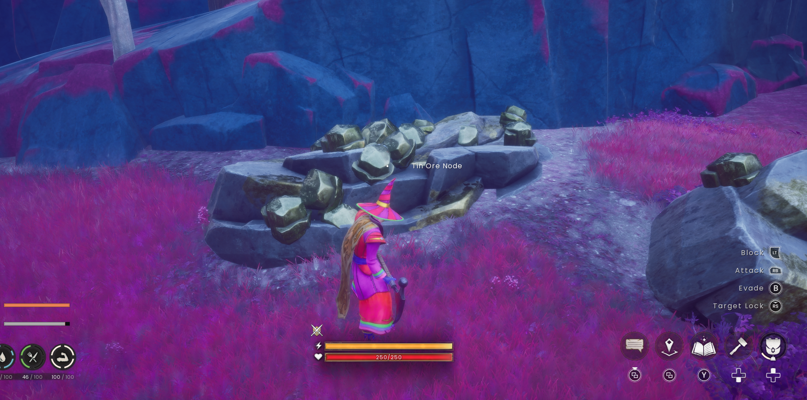
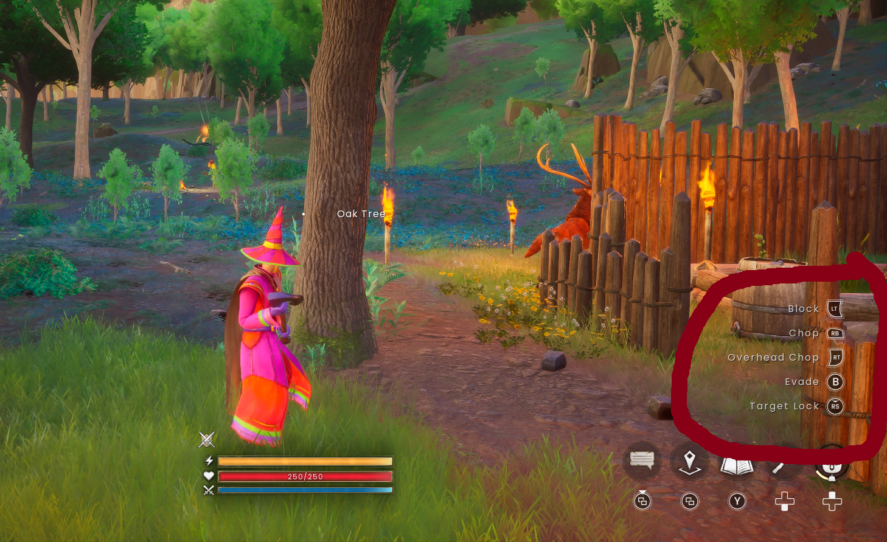

Resource gathering
Know what you need, bring the right tool and make every trip worthwhile.
On this page
Plan a gathering trip
- Choose one craft or camp project. Read its missing ingredients.
- Bring the appropriate tool and check its condition.
- Leave enough carrying capacity for the return journey.
- Take supplies and identify a safe route back.
- Gather what you came for, then return before a small trip becomes an unplanned expedition.
Quick resource reference
| Resource | How to approach it | What to watch |
|---|---|---|
| Loose wood and stone | Look around the starting area and interact with ground items. | A useful way to begin before you have tools. |
| Logs | Equip a suitable axe and target the correct tree. | Tree type and tool requirements matter. |
| Stone and ore | Use a pickaxe appropriate for the deposit. | Read any tool-tier warning. |
| Rune essence | Look for the distinctive floating-rock formations. | Prepare the required runes afterwards; essence is not a finished rune. |
| Food ingredients | Collect appropriate plants or animal drops. | Read descriptions and prepare supplies before travelling. |
| Fibres and hides | Check the recipe, then the Journal entry for its source. | You may need processing before final crafting. |
| Higher-tier materials | Explore only when your tools and equipment are suitable. | A new biome may introduce hazards as well as resources. |
Mining: compare the two states



If a deposit rejects your tool, swinging again will not solve the requirement. Check that the intended pickaxe is equipped, read the warning and compare the tool against the resource’s requirement. Repair or upgrade as appropriate.
Woodcutting: read before you swing


Face the tree closely enough for the target name to appear. Use the appropriate chop action and check that you are receiving the material you need. Do not clear decorative or planted trees around camp without permission.
Bring useful things home
Deposit materials in the agreed storage. Keep a small working stock for your own repairs and tell the group when you discover a useful source. Mark a route you can actually repeat safely, not just a location you survived once.
Check the tool before the trip
Use the full mining and logging tier tables to avoid arriving with an axe or pickaxe that cannot harvest your target. For food supplies, learn the rod-fishing sequence.
Further reading
For exact requirements, detailed walkthroughs and more depth, visit the topic pages below.
Wiki adaptations and data: RuneScape: Dragonwilds Wiki contributors, CC BY-NC-SA 3.0. See credits for source dates.